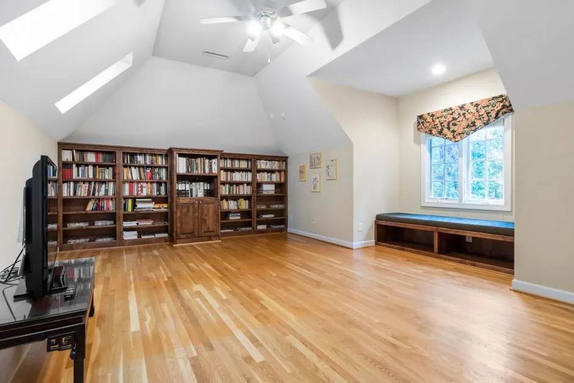

Three signs point directly to the attic: your upstairs rooms stay noticeably hotter than downstairs even with the AC set low; your AC runs more than 10–11 hours per day during Houston summers; or you can see the wooden floor joists in your attic, which means insulation depth is under 3 inches and you are well below R-30. A free inspection confirms the exact current R-value and shows what an upgrade would cost before you decide anything.
Attic Insulation in Cypress, TX — Where Summer Humidity Keeps AC Bills High
We are based in Cypress TX. Most homes in Copperfield, Fairfield, Stone Gate, and Coles Crossing were built in the 1980s and 1990s with R-11 to R-19 insulation — less than half of what the Department of Energy recommends for Harris County today. When your AC runs all day and upstairs rooms stay hot, the attic is almost always the reason. We are your closest local insulation contractor. Read our guide on choosing the best attic insulation for Houston homes.
- Home base
- We are located on Cypress Farms Ranch Rd — Cypress is our home market, not a service territory
- 135–140°F
- peak July attic temperature in under-insulated Cypress homes with original R-11 to R-19
- R-38
- DOE minimum for IECC Climate Zone 2A — most pre-2005 Cypress homes fall well short
- Same-week
- scheduling is regularly available for Cypress jobs — fastest response of any area we serve
Why Cypress TX Homes Struggle With Summer Heat
Cypress grew through several distinct waves. Copperfield and Fairfield, built primarily from the early 1980s through the mid-1990s, were insulated to codes requiring only R-11 to R-13 in attics. The Stone Gate and Coles Crossing corridor from the late 1990s through the mid-2000s typically received R-19. Even R-19 is less than half of the R-38 minimum the Department of Energy recommends for Houston's climate today.
After 25 to 40 years, that insulation has compressed. An attic that started at R-19 now performs closer to R-12 in many Cypress homes. On a July afternoon, your attic reaches 135–140°F. Your AC works against that heat load every hour — which is why June, July, and August energy bills in many Cypress homes regularly reach $300–$420 for a 2,000 sq ft home.
- Copperfield1982–1992 builds — original R-11 now compressing to R-7 to R-9. One of our highest call volumes in Cypress.
- Fairfield1988–1998 two-story builds. Second floor averages 5–8°F hotter than ground floor with original insulation intact.
- Stone Gate / Coles CrossingLate 1990s to mid-2000s. Insulation in its 20th to 30th year — R-19 original, settling to R-12 to R-15 today.
- Bridgeland / Towne LakeNewer master-planned builds from 2005 onward. Started at R-30 to R-38 — still below R-49, which delivers the best return at current energy prices.
What Cypress Homeowners Tell Us When They Call
- Upstairs bedrooms won't cool down past 9pm: The second floor sits closest to the roof. In Fairfield and Copperfield where two-story builds are common, this is the most reported complaint we hear — even with the thermostat set to 72°F.
- Energy bills over $350/month from June through September: A 2,000 sq ft Cypress home with R-13 attic insulation typically spends $320–$420/month cooling in peak summer. After upgrading to R-38, most homeowners report bills dropping to $190–$260 — savings of $100–$160/month.
- AC running 11–14 hours per day: A properly insulated Cypress home needs roughly 8–10 hours of runtime on a 97°F day. Anything beyond that points to the attic as the primary heat source.
- Visible floor joists in the attic: If you can see the wooden joists when you look into your attic, your insulation depth is below 3 inches — meaning you are at R-9 or less, less than a quarter of what is recommended for this climate.
Insulation Services We Install in Cypress TX
We inspect first, then recommend the right solution for your home's age, layout, and budget. Every job includes air sealing before insulation is added.

Blown-In Insulation Cypress TX
Blown-in insulation is the most cost-effective attic upgrade for Cypress homes. The material fills every corner of the attic floor — around wires, pipes, and ductwork — without leaving gaps. Most homes built in the 1980s and 1990s measure R-11 to R-19. A single job brings most Cypress attics up to R-38 in one visit, starting at $0.65 per square foot installed. See full details on our blown-in insulation service including what the install day looks like.
Spray Foam Insulation Cypress TX
Spray foam applied under the roof deck brings the entire attic into conditioned space — the right choice when HVAC equipment or ductwork sits in the attic. In Cypress homes, duct losses can account for 20 to 30% of cooling waste. Open-cell starts at $1.20 per square foot; closed-cell starts at $2.20 per square foot. Read about open-cell vs closed-cell applications on our spray foam insulation page.

Injection Foam Insulation Cypress TX
Injection foam is the only practical way to add R-value to existing finished walls without removing drywall. For older brick homes in Copperfield and Fairfield, the exterior brick veneer is drilled from outside, foam is injected to fill the wall cavity, and the holes are patched. No interior disruption. See what R-value injection foam adds and how the process works on our injection foam insulation page.
Air Sealing Cypress TX
Insulation slows heat — air sealing stops conditioned air from escaping through gaps that insulation cannot cover. We seal attic hatches, recessed light cans, plumbing penetrations, and HVAC boots before insulation is installed. Cypress homes built before 2000 commonly have open can lights and unsealed attic hatches. Skipping air sealing is the most common reason an insulation upgrade underperforms.

Attic Fan Installation Cypress TX
A solar attic fan pulls heat out of a vented attic using sunlight only — no added electricity cost. In summer, a Cypress attic without ventilation can reach 130 to 145°F. That heat radiates through the ceiling into living spaces even with adequate insulation. An attic fan pairs well with a blown-in job when both insulation and ventilation are the problem. Full details on our attic fan installation page.

Insulation Removal Cypress TX
Pest-contaminated, water-damaged, or severely compacted insulation must come out before new material goes in. Adding blown-in over damaged insulation traps moisture and odors without restoring R-value. Many Cypress homes built in the 1980s and 1990s have original insulation that absorbed moisture from roof leaks or hurricane flooding. We inspect and photograph existing conditions during the free walkthrough. See what triggers a removal job on our insulation removal page.
Attic Insulation Cost in Cypress TX — Real Numbers
Pricing transparency lets you make a confident decision before anyone sets foot in your attic. Here is what attic insulation actually costs in Cypress TX:
| Service | Price per sq ft | Typical 1,800 sq ft Cypress attic | Best for |
|---|---|---|---|
| Blown-in insulation (to R-38) | $0.65–$0.95 | $1,170–$1,710 | Most Cypress homes — attic floor upgrade |
| Open-cell spray foam (roof deck) | $1.20–$1.85 | $2,160–$3,330 | Homes with attic HVAC equipment |
| Closed-cell spray foam (roof deck) | $2.20–$3.10 | $3,960–$5,580 | Maximum moisture and thermal control |
| Old insulation removal | $1.00–$2.00 | $1,800–$3,600 | Damaged, pest-contaminated, or wet insulation |
Prices cover materials and labor. Your written quote will itemize every line based on your attic's exact square footage, current insulation depth, access conditions, and whether removal is needed first.
Energy Savings You Can Expect in Cypress
A Cypress homeowner in a 2,000 sq ft home upgrading from R-13 to R-38 blown-in insulation typically sees monthly cooling costs drop by $100–$160 from June through September. At that rate, most projects pay for themselves within 2–4 years — before CenterPoint rebates or the federal tax credit are factored in.
CenterPoint Energy Rebates & Federal Tax Credits
Cypress is served by CenterPoint Energy. Their Home Energy Efficiency Program offers rebates on qualifying insulation upgrades — we confirm current rebate amounts during your free inspection. The federal Inflation Reduction Act offers a tax credit of up to 30% of insulation costs (maximum $1,200) through 2032 for homeowners upgrading to the recommended R-value for their climate zone.
Cypress TX Subdivision Insulation Guide — What Your Home Likely Has
Cypress spans four decades of construction. The original insulation in each subdivision reflects the building codes and standard practices of that era. Use this as a starting reference — your free inspection gives you the exact current R-value for your specific home.
| Subdivision / Area | Primary Build Era | Original R-Value | Likely R-Value Today | Recommended Upgrade |
|---|---|---|---|---|
| Copperfield | 1982–1992 | R-11 to R-13 | R-7 to R-10 | R-38 blown-in (priority) |
| Fairfield | 1988–1998 | R-13 to R-19 | R-9 to R-14 | R-38 blown-in |
| Stone Gate, Coles Crossing | 1997–2006 | R-19 | R-13 to R-16 | R-38 blown-in or spray foam |
| Cypress Creek Lakes, Longwood | 2000–2012 | R-19 to R-30 | R-15 to R-25 | R-38 top-up or spray foam |
| Bridgeland, Towne Lake | 2007–present | R-30 to R-38 | R-24 to R-34 | R-49 top-up recommended |
R-values above are typical estimates based on era build codes. Actual settled R-value depends on original installation quality, attic ventilation, and any prior pest or moisture activity. A free inspection gives you the exact number.
Cypress TX Homeowners Ask Us These Questions
Blown-in insulation in Cypress TX costs $0.65–$0.95 per square foot installed. On a typical 1,800 sq ft attic — common in Fairfield and Stone Gate homes — that is $1,170–$1,710 for a full upgrade to R-38. Open-cell spray foam attic encapsulation ranges from $1.20–$1.85 per sq ft; closed-cell from $2.20–$3.10. Because we are based in Cypress, there is no travel premium — the price you see is the price you pay.
Blown-in insulation on the attic floor is the right choice for most Cypress homeowners — it upgrades R-value quickly and costs 40–60% less than spray foam. Spray foam encapsulation under the roof deck is the better option when HVAC equipment sits in the attic, since it brings the attic into conditioned space and eliminates duct losses. Newer Bridgeland and Towne Lake homes built after 2010 are more likely to have attic-mounted HVAC that makes spray foam worth evaluating. We inspect your attic first and tell you honestly which option fits your home and budget.
Yes — for most Cypress homes built before 2005, upgrading from R-11 or R-19 to R-38 reduces cooling costs by 25–40% during peak summer months. On a $380/month July bill, that is $95–$152 in monthly savings. The payback period for a blown-in upgrade on a typical 1,800 sq ft attic runs 2–4 years at current energy prices. Homes that also air seal the attic floor penetrations typically see savings at the top end of that range.
Step 1: You call or submit the form — we schedule a free attic inspection, usually within 3–5 days. For Cypress jobs, same-week scheduling is regularly available. Step 2: A technician inspects your attic, measures the current R-value, checks ventilation and air leaks, and takes photos. Step 3: We present a written, itemized quote with the exact price for materials, labor, and any removal needed. Step 4: You approve the quote — or don't, zero pressure either way. Step 5: We schedule the installation, typically within 1–2 weeks. Step 6: Most Cypress jobs are done in one day. We use drop cloths, clean up completely, and walk you through the finished work before we leave.
We Are Based in Cypress, TX — Your Local Crew
Our office is on Cypress Farms Ranch Rd in Houston 77429. Every Cypress job starts and ends from here — no travel time added to your quote.
Schedule Your Free Cypress TX Attic Inspection
We are a locally owned, fully insured insulation contractor based in Cypress TX. We inspect at no charge, measure your current insulation depth, seal air leaks, and give you a written quote before any work begins. Copperfield, Fairfield, Stone Gate, Bridgeland, Towne Lake, Cypress Creek Lakes — we cover all of Cypress and surrounding Harris County.
What happens after you submit: Our Cypress team will call within a few hours to schedule your free attic inspection. Most inspections take 30–45 minutes. You leave with an accurate calculation of your attic's current thermal performance, photos of the current condition, and a written itemized quote in hand.
Last updated: October 2026